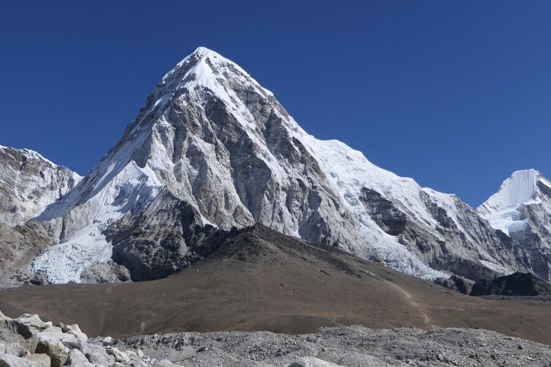
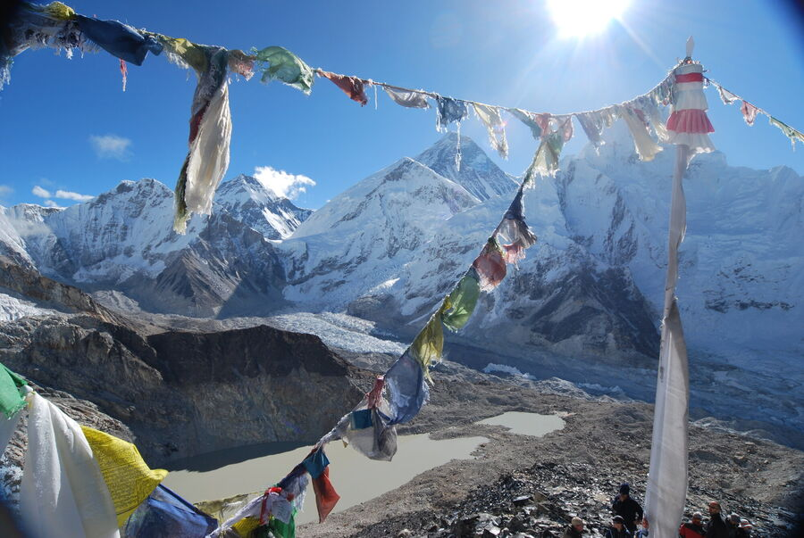

Die Reisen

April/Mai 2022
Chris @ Himalaya 2.0
Zweite Trekking-Tour zum Mount Everest Base Camp, diesmal mit Yeşim – über Kala Patthar und Cho La Pass nach Gokyo.
14 Tage132,8 km5.609 m

September/Oktober 2009
Chris @ Himalaya
Die erste Tour mit Ralf: über Gokyo und den Cho La Pass zum Everest Base Camp und auf den Kala Patthar.
13 Tage5.550 m
▲
Ararat
Besteigung des Ararat (5.137 m).